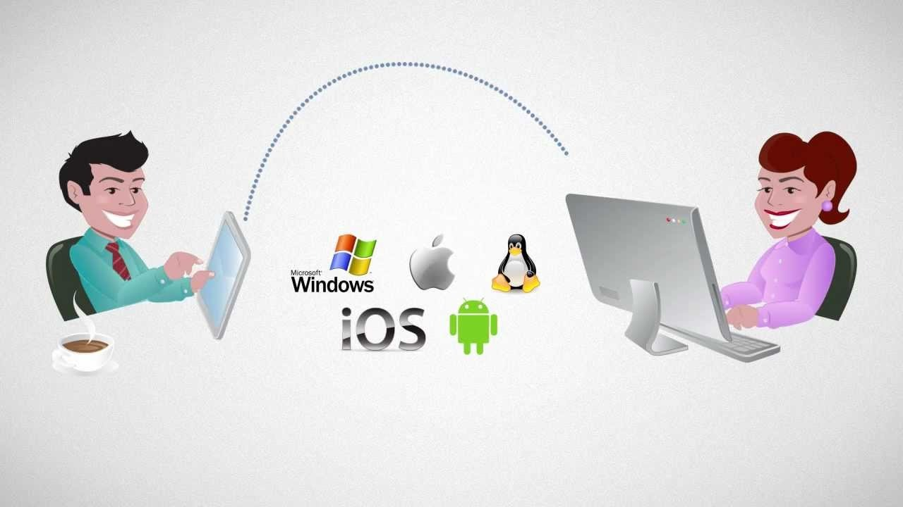

Video and Screen Sharing web is a cloud-based video communications app that allows you to set up virtual video and audio conferencing, screen-sharing capabilities.
You don't need an account to attend a meeting, and the platform is compatible with Mac, Windows, Linux, iOS, and Android, meaning nearly anyone can access it.
